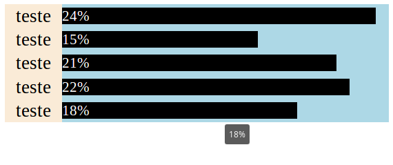

O Em Busca do Código é um site em formato de plataforma de ensino a distância (EAD), totalmente aberta e gratuita.
Aprendendo e ensinando, essa é a minha regra para mim.
Publicado dia 17 de março de 2017.
Compre um adesivo do Em Busca do Código.
Publicidade
Publicidade
Publicidade
Nesta dica nós conferimos como criar um gráfico de barras horizontais utilizando somente HTML e CSS.
Faz tempo que não escrevia algo sobre HTML e CSS e por mais que o vídeo tenha ficado um pouco longo é somente uma revisão de vários conceitos, tudo o que está nesse vídeo eu já utilizei no mínimo algumas vezes e, se eu já utilizei, eu fiz vídeo que utilizo o que estou utilizando aqui.
Assista ao vídeo:
Antes de começar precisamos de um código fonte inicial HTML, um DOCTYPE normal, com suas respectivas tags iniciais e uma section.
Agora o código fonte inicial CSS, que tem a configuração da minha primeira classe, que é relacionado ao tamanho do gráfico.
O width, o tamanho horizontal é você quem escolhe, já o height é diretamente relacionado ao número de itens que tem no gráfico.
A primeira coisa que nós vemos é que eu preciso criar no mínimo duas tags div dentro da section, pois temos dois itens que serão preenchidos, o nome e o valor que é a barrinha do nosso gráfico.
Publicidade
Agora simplesmente crio classes para essas tags, classes diferente.
Agora nós vamos direto no arquivo CSS pois precisamos configurar o tamanho e a cor dessas classes.
Repare no height, altura dessas classes, essa altura e a quantidade de itens do nosso gráfico está totalmente relacionada ao tamanho do nosso gráfico.
Agora nós precisamos posicionar as nossas tags, poderia utilizar CSS GRID mas neste caso eu prefiro usar float pela maior compatibilidade.
Publicidade
Voltando ao documento HTML se eu inserir valores diretamente nessas divs vão ocorrer alguns problemas, por isso eu crio mais duas divs, uma dentro de cada div.
E já crio classes especificas para cada uma delas.
E dentro dessas tags que eu insiro os valores.
Ao olhar o resultado em nosso navegador vemos que não existe configuração alguma nos valores inseridos dentro dessas classes, e a primeira coisa que iremos fazer agora é centralizar horizontal e verticalmente os nomes dos itens do nosso gráfico.
Agora começa a parte hard, vamos fazer as barrinhas do nosso gráfico.
O código fonte acima cria uma barra preta de altura de 14 px onde o texto será branco e, centralizado verticalmente. Mas isso não configura o tamanho de cada barra, e é aí que está o "gigantesco pulo do gato" deste gráfico.
Se fôssemos configurar o tamanho da barra por CSS todas as barras teriam o mesmo tamanho ou precisaríamos criar uma nova classe para cada item do nosso gráfico. por isso o tamanho da barra é inserido no HTML.
Já inseri um title no HTML pois é ele que mostra "o que nós quisermos", quando o cursor do mouse parar na barra do nosso gráfico ele vai mostrar a informação que queremos mostrar.
E só por uma questão de layout eu diminui o tamanho da fonte do texto que estará dentro das barras.
Como fazer um gráfico utilizando somente HTML e CSS termina por aqui, agora você apenas precisa informar a quantidade de itens do seu gráfico no HTML e configurar o tamanho do gráfico pelo CSS. Como fazer um gráfico utilizando somente HTML e CSS termina por aqui, agora você apenas precisa informar a quantidade de itens do seu gráfico no HTML e configurar o tamanho do gráfico pelo CSS.
Publicidade
Este gráfico como apresentado até agora deixa todos os itens ficarem com 100%, se no seu gráfico a somatória dos itens for 100% segue esta dica de como utilizar.
Veja o item de maior valor, se o maior valor for menor que 10%, na hora de inserir o tamanho das barras (dentro do HTML) você multiplica a porcentagem do tamanho do width por 10. Se for menor que 20% você multiplica todos por 5, se menor que 25% você multiplica por 4 e se for menor que 50% você multiplica o tamanho da barra do seu gráfico por 2.
Para ficar mais fácil eu inseri o código fonte final com um gráfico onde a somatória dos itens é 100% e o maior item tem o valor igual a 24%.
Código fonte HTML (completo)
Código fonte CSS (completo)
Publicidade
Espero que esta dica tenha sido útil, se gostou dessa dica e se possível já deixa seu like lá no vídeo do YouTube, compartilha o link, caso tenha dúvidas pode comentar no vídeo do YouTube ou na página no Facebook, até mais.
Se estiver utilizando bloqueador de propaganda, por favor, coloque este site na lista branca (isto sempre será apenas um pedido). Obrigado pela escolha.